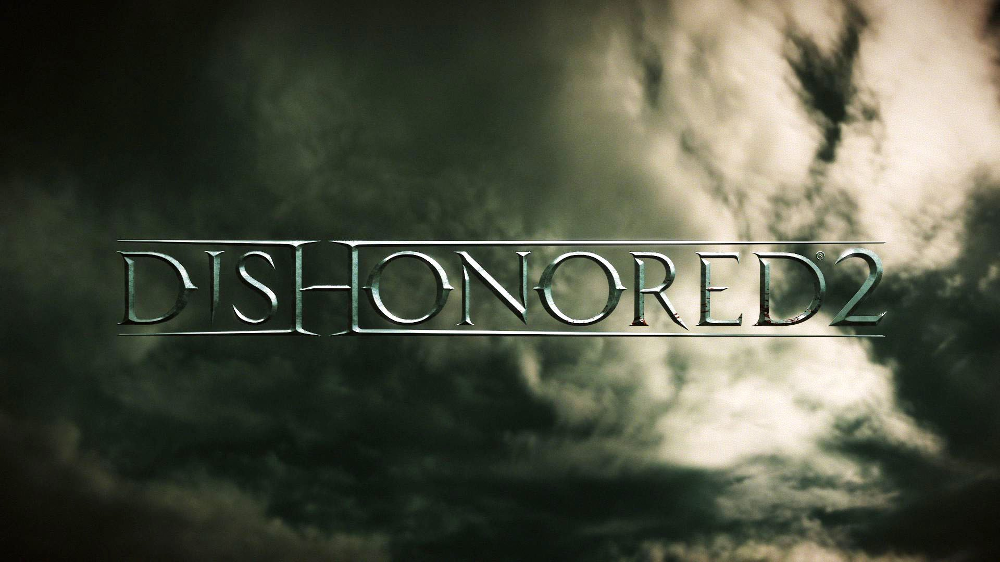
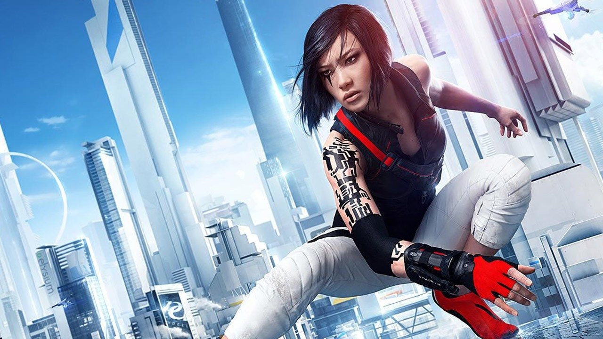
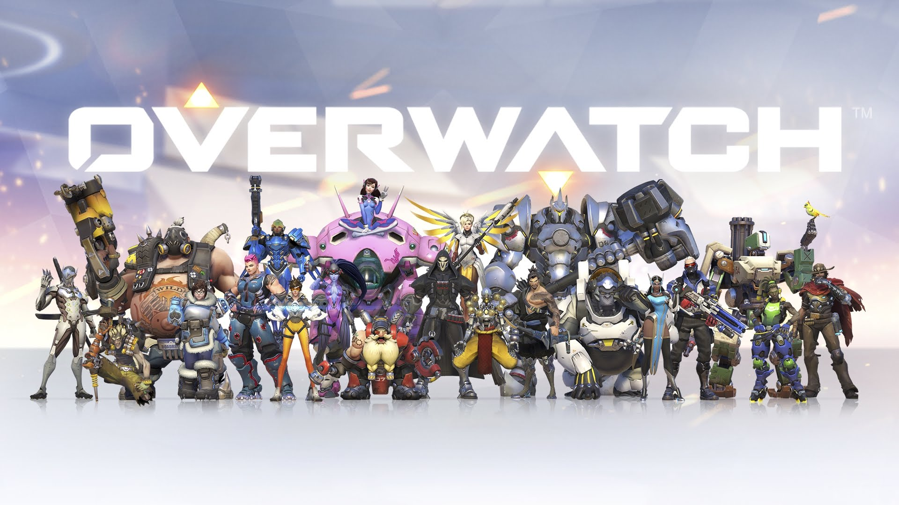

Dishonored 2 is the direct sequal to Arkane studio's sucessful and popular Dishonored. The game was accounced at the E3 2015 Bethesda conference and it is anticipated for release at some point during 2016. The game is set 15 years after the events of the first and follows the recently dethroned Empress Emily Kaldwin. It has been reported that the game will give the player to play as either Emily or Corvo Attano, the protagonist of the previous installment. As show by the game's trailer it appears to be set in a different city than Dishonored's Dunwall and technology appears to have developed to become clockwork based, a direct contrast to Dishonored's oil and fuel based technology. a more clock
Mirror's Edge: Catalyst is a game currently in development by EA DICE, and is to be pulished by electronic Arts. The game was accounced at EA's 2016 E3 conference and has a set release date of June 7th of this year. The game is not a direct sequel to EA DICE's wildly sucessful Mirror's Edge but is instead a sort of prequel and reboot of the first game. As seen in the trailerCatalyst will now focus on the past and life of the main protagonist, Faith. Like it's predeseccor the game will be a semi-open world free running game that relies on fast paced game play and evasive combat.
https://www.youtube.com/watch?v=FqnKB22pOC0
